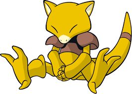
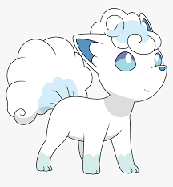

<!DOCTYPE html>
    <html lang="en"></html>
    <head>
        <meta charset="UTF-8">
        <meta name="viewport" content="Ejercicio HTML - Corrige los errores">
        <title>Pokemones<title></title>
    </head>
    <body>


<div align="center">
    
<h3>Umbreon</h3>


<p>Es un Pokémon de tipo siniestro introducido en la segunda generación. <br>
   Es una de las ocho posibles evoluciones de Eevee. Su nombre proviene de la palabra en<br> 
   latín umbra ("sombra"), y eon, el sufijo agregado a los nombres de todas las evoluciones de Eevee.     
</p>
<br>
<a href= "https://pokemon.fandom.com/es/wiki/Umbreon" target="_blank">Para más información consulta aquí</a>
<br>

<h3>Abra</h3>


<p>Abra es un Pokémon de tipo psíquico introducido en la primera generación. <br>
    Su nombre junto con el de su evolución Kadabra forma la palabra abracadabra.<br> 
    empleada por varios magos en literatura.<br>    
</p>
<br>
<a href= "https://pokemon.fandom.com/es/wiki/Abra" target="_blank">Para más información consulta aquí</a>
<br>

<h3>Vulpix alola</h3>


<p>Vulpix de Alola es un Pokémon de tipo hielo introducido en la séptima generación. Es la forma regional de Vulpix. <br>
    Su nombre proviene de la combinación de la palabra en latín vulpes ("zorro") y de la palabra en inglés six ("seis").<br>    
</p>
<br>
<a href= "https://pokemon.fandom.com/es/wiki/Vulpix_de_Alola" target="_blank">Para más información consulta aquí</a>
<br>

</div>
    
    </body>

    </html>